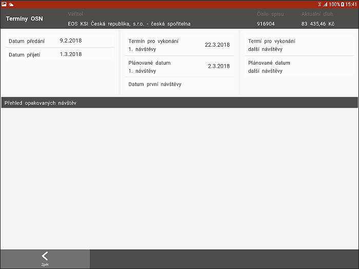

Podzáložka - TERMÍNY OSN

Podzáložka obsahuje všechny termíny plánovaných i uskutečněných schůzek. Jsou zde i definice maximálních termínů, do kdy je třeba návštěvu uskutečnit.
Termíny jsou vždy rozděleny dle následujících pravidel:
- Datum předání - Datum předání spisu z centrály inspektorovi do aplikace TRACE.
- Datum přijetí - Datum, kdy IP převzal spis do své správy. Toto datum se bere jako počátek OSN (pro reporty).
- Termín pro vykonání 1. návštěvy - Datum maximálního termínu uskutečnění 1. OSN (využití pro Urgence i pro řazení).
- Plánované datum 1. návštěvy - Při plánování 1. osobní návštěvy je nutné plánovat schůzku v rozmezí od data přijetí do data "Termín pro vykonání 1. návštěvy".
- Datum první návštěvy - Datum vykonání první osobní schůzky je zapsán vždy až po vykonání a zapsání 1. OSN pomocí procesu "Zápis z OSN".
- Termín pro vykonání další návštěvy - Datum maximálního termínu uskutečnění další OSN (využití pro Urgence i pro řazení).
- Plánované datum další návštěvy - Při plánování další osobní návštěvy je nutné plánovat schůzku v rozmezí od data 1.OSN do data "Termín pro vykonání další návštěvy". Ve výjimečných případech lze plánovat i přes maximální datum, ale inspektor při plánování takového termínu bude na tuto skutečnost upozorněn a po potvrzení bude o tomto kroku informován i Supervizor formou Upozornění.
- Přehled opakovaných návštěv - jedná se o seznam všech opakovaných osobních návštěv u dlužníka, tedy seznam termínů druhé a další opakované OSN.